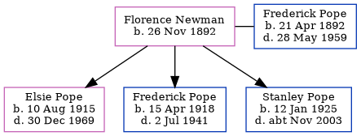

Florence Caroline Pope (née Newman) 1892 -
[ Home ] | [ Calendar ] | [ Surnames Index ] | [ Errors ] | [ Family History ]Florence Newman, the wife of Frederick Ernest Pope (the third cousin twice-removed on the father's side of Nigel Horne), was born in Brentford, London, England on 26 Nov 18921 and married Frederick (a fruiterer with whom she had 3 children: Elsie Louisa Mary, Frederick George and Stanley Gordon) in Brentford around May 19152.
Children
- Elsie Louisa Mary was born on 10 Aug 1915
- Frederick George was born on 15 Apr 1918
- Stanley Gordon was born on 12 Jan 1925
Citations
- England & Wales births 1837-2006 - Findmypast
- England & Wales Marriages 1837-2005 - Findmypast
Media
England & Wales births 1837-2006 - BMD/B/1893/1/AZ/000424/186
Family Tree
Map
Generated by ged2site. Last updated on Jul 3, 2024